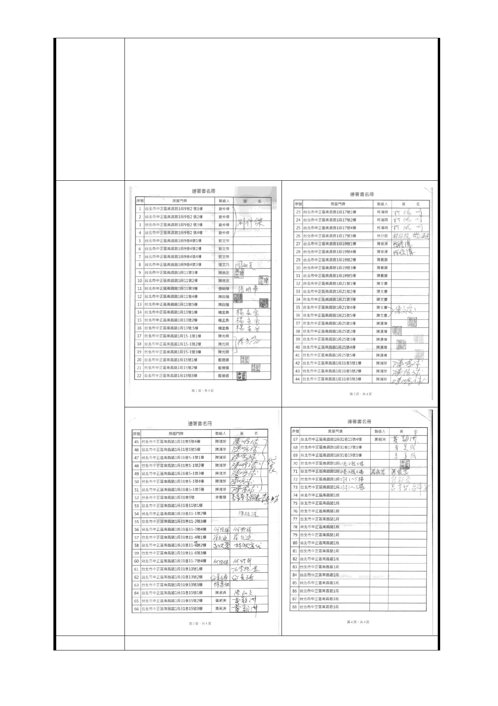

內坪數不縮水」、「有錢自己賺」等幾個原則（詳附件，中央
社 99.7.27 新聞）。
二、本區（南昌路一段 9 巷至 31 巷街廓）早於 98 年起即與
多家建設公司洽談改建事宜，惟貴府為捷運萬大線突於
99.6.11 公佈本區禁建，嗣因出入口 B 位置遭南海路住戶質
疑，致影響聯開案進行。
三、經查旨揭專案僅實施至 104 年 8 月 1 日，惟查萬大線 LG01
聯開案迄今未能核定，如屆時未納入本區為聯開範圍，因貴
府之禁建致影響本區住戶權益甚鉅，爰請同意延長本區「老
舊公寓更新專案」辦理期間。
市 府 回 應 同捷四-5A、5B 回應意見。
- 35 -